Residential Energy System: Load Forecasting & Battery Dispatch Optimisation
The dataset covers a full two-year period of a residential energy system at 15-minute resolution, providing 70,077 timesteps. It contains six columns describing the energy flows at each moment in time.
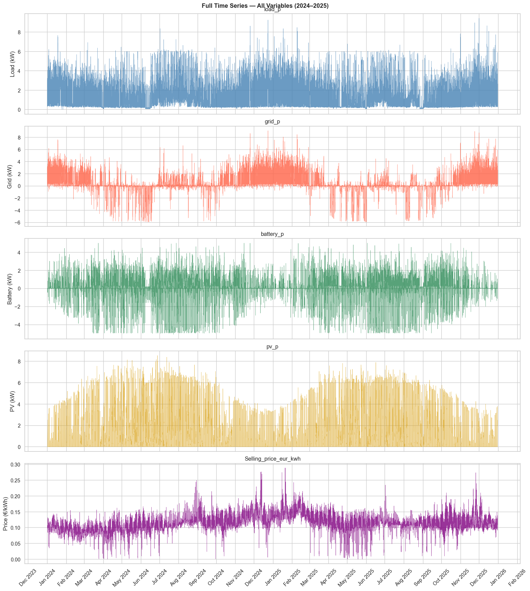
This bird's-eye view shows two complete years of data stacked vertically. Each panel reveals a different dimension of the energy system's behaviour over time.
Load shows spiky, high-variance behaviour throughout the year. The dense vertical lines represent the rapid within-day fluctuations (morning rise, midday peak, evening activity). Visually, there is no dramatic seasonal pattern in load magnitude — the variance looks fairly consistent year-round, with a slight elevation in winter months (Dec–Jan). This tells us the household does not have heavy air conditioning that would spike summer load.
Grid power shows pronounced seasonal variation. Notice the wide downward swings in summer (Apr–Sep) — these are export events when PV generation far exceeds consumption. In winter, the grid is almost always importing (positive). The system is clearly net-exporting in summer and net-importing in winter.
Battery shows consistent bidirectional activity throughout the year with no obvious seasonal bias in magnitude. The battery cycles daily. Notice the amplitude appears slightly larger in summer — consistent with more PV to charge from. The 2024 period shows some abnormal dense activity (the corrupted sensor readings).
PV shows the clearest seasonal signal of all variables: a strong sinusoidal shape with peak generation June–August and near-zero output November–January. The daily spikes within the summer months represent individual sunny days. This is the dominant driver of the energy system's behaviour.
Electricity prices show a fairly stable band around 0.09–0.14 €/kWh with occasional spikes up to 0.28 €/kWh. Prices appear slightly more volatile in winter. The 2025 period (right half) has a slightly elevated baseline versus 2024 — a market-wide price increase of ~8%.
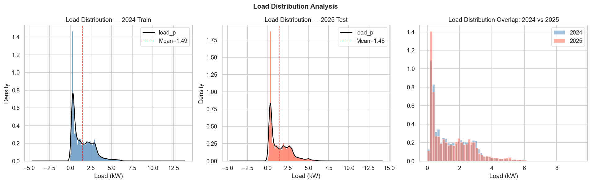
The load distribution is strongly right-skewed (skewness = 1.04 in 2024, 1.10 in 2025). This means the most common load values are relatively low (0.3–1.5 kW — baseline appliances like fridges, standby devices), but there are frequent high-demand events (cooking, EV charging, heating) that pull the mean above the median and create a long right tail.
The distribution has a clear bimodal shape: a large mode around 0.3–0.5 kW (night/idle state) and a second, broader mode around 1.5–2.5 kW (active daytime use). This bimodality is an important hint for modelling — a single Gaussian assumption would be wrong.
The two distributions are nearly identical, which is excellent news. The 2025 distribution is marginally shifted rightward (2025 mean: 1.476 kW vs 2024: 1.488 kW — essentially the same household, same usage patterns). This validates that training on 2024 data will generalise well to 2025. The slight 2025 shift toward higher values at the extreme tail (max: 9.44 kW vs 9.26 kW) may indicate a new high-consumption appliance.
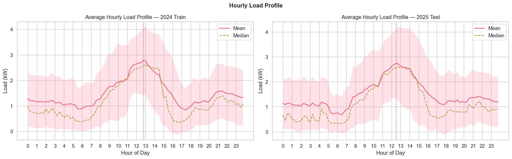
This is one of the most important plots for understanding the household's routine and designing our forecasting features.
Load sits at its lowest: ~0.8–1.1 kW mean, ~0.7 kW median. This is pure baseline consumption — refrigerator, always-on devices, standby power. The narrow confidence band here (low std) means this period is the most predictable part of the day.
Load rises steadily as the household wakes up (lights, kettle, cooking, shower). The wide shaded band shows high variance during this period — weekdays and weekends behave very differently (earlier on weekdays). This is the hardest period to predict precisely.
The mean load peaks at 12:45h at ~2.79 kW. This is unusual for a typical residential profile (which usually peaks in the evening). The reason: this household has significant PV generation, and the midday period corresponds to maximum PV output. The household is likely running high-consumption appliances deliberately during this window to self-consume cheap solar energy (washing machine, dishwasher, cooking). This is a solar-optimised behaviour pattern.
Load drops sharply after 14:00. The minimum hourly mean occurs around 17:30h at only 0.85 kW. This brief low-load afternoon window is the ideal time to top up the battery cheaply before the evening peak.
A secondary rise in the evening as the household becomes active again (cooking dinner, TV, lighting). This peak is lower than the midday peak (~1.5 kW mean at 21:00) but important because it coincides with high electricity prices and no PV generation — the worst combination for the bill. This is exactly when the battery should be discharging.
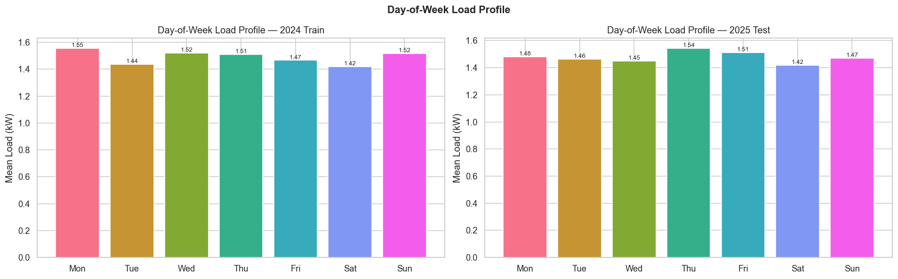
The day-of-week effect is surprisingly weak. The difference between the highest and lowest day is only ~0.08 kW, which is less than 5% of the mean. Weekday load is marginally higher than weekend — the opposite of many households where weekends see more home activity. This is consistent with the midday-peak profile: if the household is optimising around solar self-consumption, the routine is driven by solar availability (which doesn't vary by day of week), not by human schedules.
Monday tends to be slightly higher, possibly due to post-weekend wash cycles or appliance backlogs.
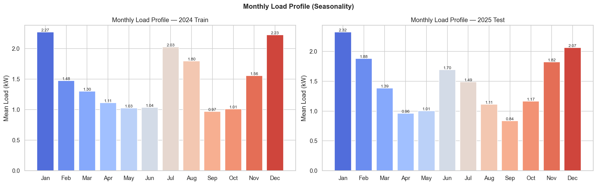
The monthly profile reveals a U-shaped seasonal pattern: load is highest in winter (Dec–Jan at ~1.8–2.0 kW mean), lowest in spring/early summer (Apr–May at ~1.2–1.3 kW), and rises again moderately in summer (Jul–Aug at ~1.6 kW). The winter peak is driven by heating, lighting (longer nights), and general indoor activity. The summer rise may reflect cooling (fans/AC) and longer evening activity.
The lowest months (April–May) correspond to the transition period when neither heating nor cooling is needed, and daylight hours are long. This is when the household is most self-sufficient.
The monthly profiles track each other closely between years. The seasonal shape is stable — confirming that month-of-year is a reliable feature for forecasting. The 2025 test set only covers January through December but the pattern is consistent.
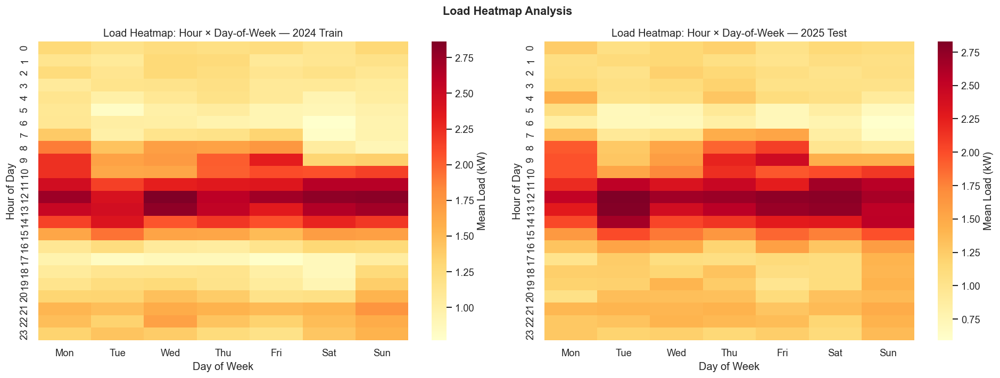
This heatmap is critical — it reveals the interaction between time-of-day and day-of-week, which a simple average cannot show.
Dark red = high load (~2.75+ kW mean). Light yellow = low load (~0.75 kW mean). The horizontal dark red band at hours 10–14 confirms the midday peak dominates every single day of the week — there is no day where the midday pattern disappears.
Looking at Saturday and Sunday: the early morning hours (06:00–09:00) are slightly lighter than weekdays (people sleep in), and the evening activity (20:00–22:00) is slightly higher on weekends. The midday peak, however, is present on all days — again driven by solar-optimised appliance use, not human schedule.
Hours 02:00–06:00 are consistently the lightest across all days of the week (pale yellow). This overnight trough is the ideal window for cheap overnight battery charging if prices happen to be low.
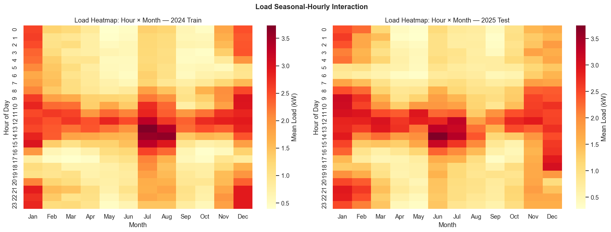
This plot reveals the seasonal evolution of the daily load profile — one of the richest features available for forecasting.
In winter (Dec–Jan), the overnight hours (22:00–06:00) show elevated load (darker colours) compared to summer. This is heating and lighting. The early morning ramp in winter starts heavier.
The dark red midday band (10–14h) is widest and most intense in June–July. This is the peak solar season — the household is running more appliances on free solar energy. In January, the midday peak is smaller because PV generates very little, and there is no solar surplus to exploit.
In December and January, the late-night hours (21:00–23:00) are noticeably darker — people are awake longer indoors due to shorter daylight. This creates a strong December/January evening signature that is unique compared to other months.
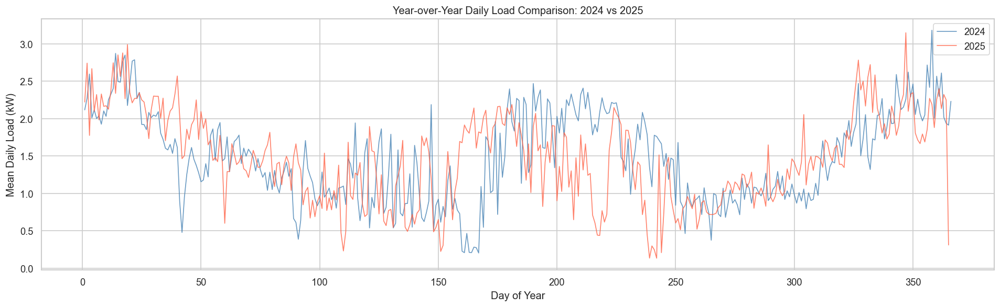
The two lines track the same seasonal shape — both dip in spring, rise in summer, dip again in autumn, and rise sharply in winter. However, the day-to-day correlation is 0.46, which is moderate rather than very high. This means the same day-of-year in a different year does not guarantee the same load — short-term events (weather, holidays, occupancy) create divergence.
The mean difference of −0.014 kW (2025 slightly lower) is negligible — effectively the same household consumption level across both years. There is no long-term trend or systematic change in usage habits.
Days 170–200 (mid June–mid July) show the largest divergence between years, likely driven by variable summer weather (cloud cover affecting PV and cooling loads). Winter shows closer tracking.
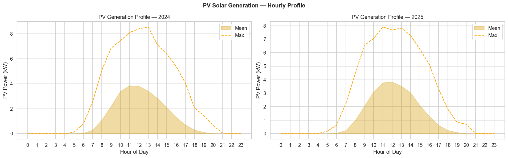
PV generation starts around 06:00 and ends around 20:00 (summer window). The maximum average output occurs between 11:00 and 14:00. The bell-shaped curve is characteristic of a south-facing solar panel array in a mid-latitude European location.
The wide gap between the mean (filled area) and maximum (dashed line) at peak hours reflects the strong seasonal variation — on a clear summer day at noon the system produces 7–8 kW, but averaging across all days including winter and cloudy days brings this down to ~3 kW mean at noon.
The PV profile almost perfectly aligns with the load midday peak. This means during summer, the solar largely self-covers the midday demand, and the battery should be used to shift the remaining surplus to the expensive evening period. During winter, the PV curve flattens dramatically — the battery must be charged from the grid during cheap price windows instead.
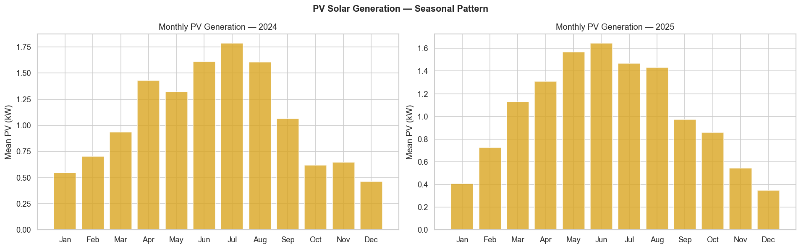
The monthly PV profile shows a dramatic 10:1 ratio between peak (July: ~2.3 kW mean) and trough (December: ~0.2 kW mean). This is one of the largest sources of non-stationarity in the system — the energy balance, battery behaviour, and grid dependency all change drastically between seasons.
The system is effectively a different problem in winter vs summer: in summer it's a storage and export optimisation problem; in winter it's almost purely a price-arbitrage grid problem.
March, April, September, and October show intermediate PV (~1.0–1.5 kW mean) with high day-to-day variability driven by cloud cover. These months are the most challenging for the battery controller — the optimal strategy shifts rapidly week-to-week.
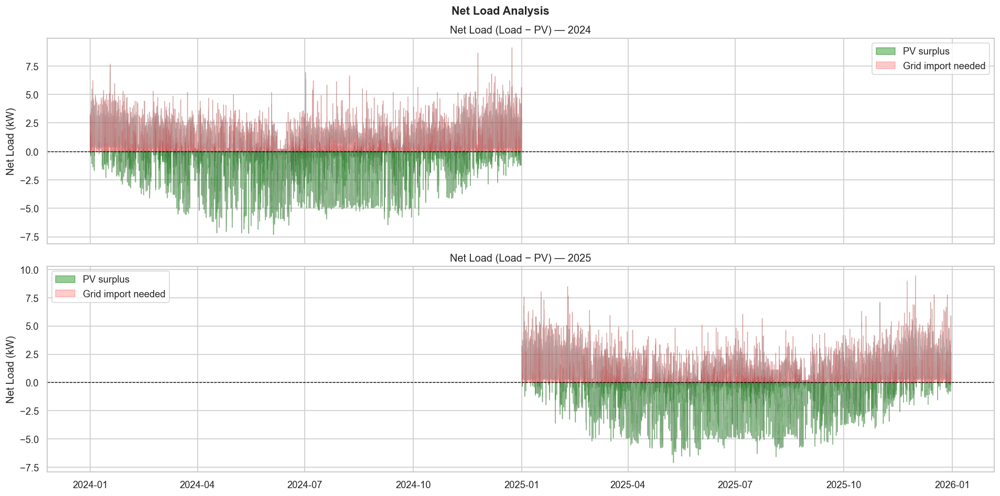
The green area below zero represents moments when PV generates more than the household consumes — surplus energy that must either charge the battery or be exported to the grid. The red area above zero represents times when the household needs more than PV provides — it must either draw from the battery or import from the grid.
In summer (the dense green band in Apr–Aug), the system is in near-constant surplus during daylight hours. In winter, the plot is almost entirely red — the household is a net consumer all day. The boundary months (Mar, Sep-Oct) show rapid alternation between green and red within the same week.
The green surplus is the "free fuel" for the battery. A good controller should capture as much of it as possible. The mean net load of 0.43 kW means that after PV contribution, the household still needs a net 0.43 kW from grid/battery on average — but this is heavily seasonal (winter net ~1.5 kW, summer net ~ −0.5 kW).
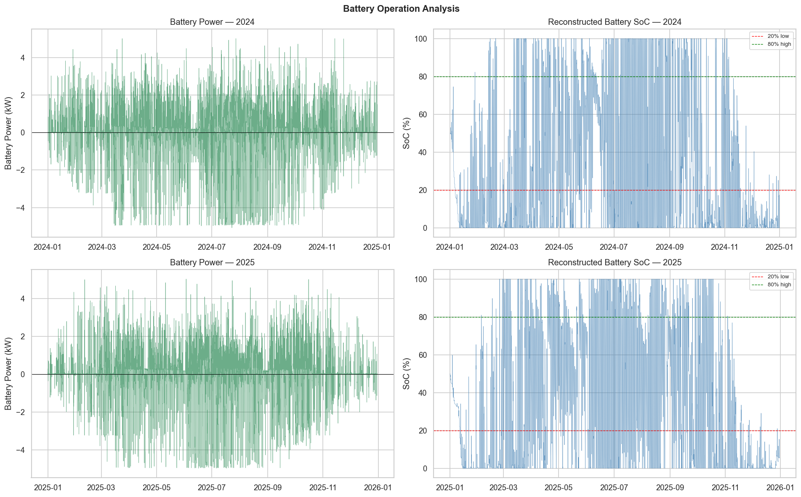
The battery power shows active bidirectional operation throughout the year. The existing controller charges (negative values) during PV surplus periods and discharges (positive values) to cover evening load. In 2024, the amplitude of the battery signal is slightly noisier — consistent with the sensor corruption. In 2025, the signal is cleaner with more defined charging/discharging pulses.
The SoC is computed by integrating battery power over time with 90% round-trip efficiency (√0.90 per direction). The mean SoC of ~30–33% is notably low — the battery spends most of its time in the lower third of its capacity. This suggests the existing controller is somewhat aggressive in discharging (or the battery capacity is undersized for the system's needs).
The SoC frequently touches 0% (fully depleted) and rarely reaches 100% (fully charged) — confirming an aggressive discharge strategy. A better controller should maintain a strategic buffer (e.g. keep SoC ≥ 20% for forecast uncertainty).
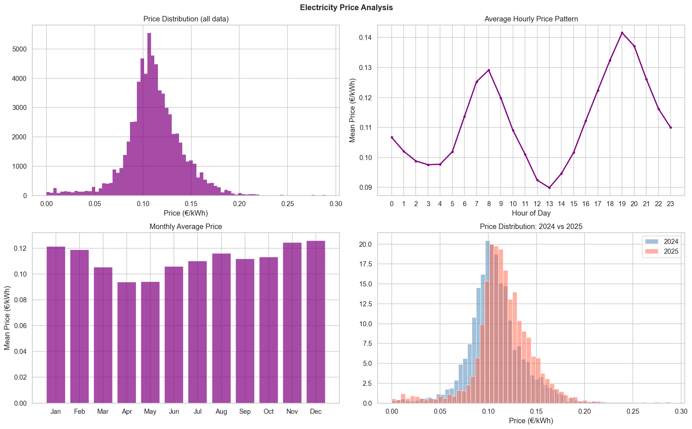
The price distribution is roughly bell-shaped, centred around 0.10–0.11 €/kWh, with a long right tail of high-price events up to 0.289 €/kWh. There are also low-price events (near zero), representing times of grid oversupply. The distribution is slightly right-skewed — rare but important high-price spikes create the biggest bill impact.
This is the most important panel for the battery controller. The price follows a clear daily cycle:
The price spread between cheap midday and expensive evening is ~5 €ct/kWh. For a 10 kWh battery, that represents ~€0.50/day in potential savings from price arbitrage alone — ~€180/year.
Prices are highest in winter (Nov–Jan: ~0.123 €/kWh) and lowest in spring (Apr–May: ~0.094 €/kWh). This mirrors the seasonal imbalance between supply and demand nationally. Winter high prices coincide with low PV — the worst combination, making battery-from-grid charging in cheap windows even more important in winter.
The 2025 distribution (salmon) is shifted noticeably rightward compared to 2024 (blue). The 2025 mean is 8% higher (0.116 vs 0.107 €/kWh). More importantly, 2025 has a heavier right tail — more high-price events above 0.15 €/kWh. This means the battery is more valuable in 2025 than 2024, and our controller will be tested against a more expensive price environment.
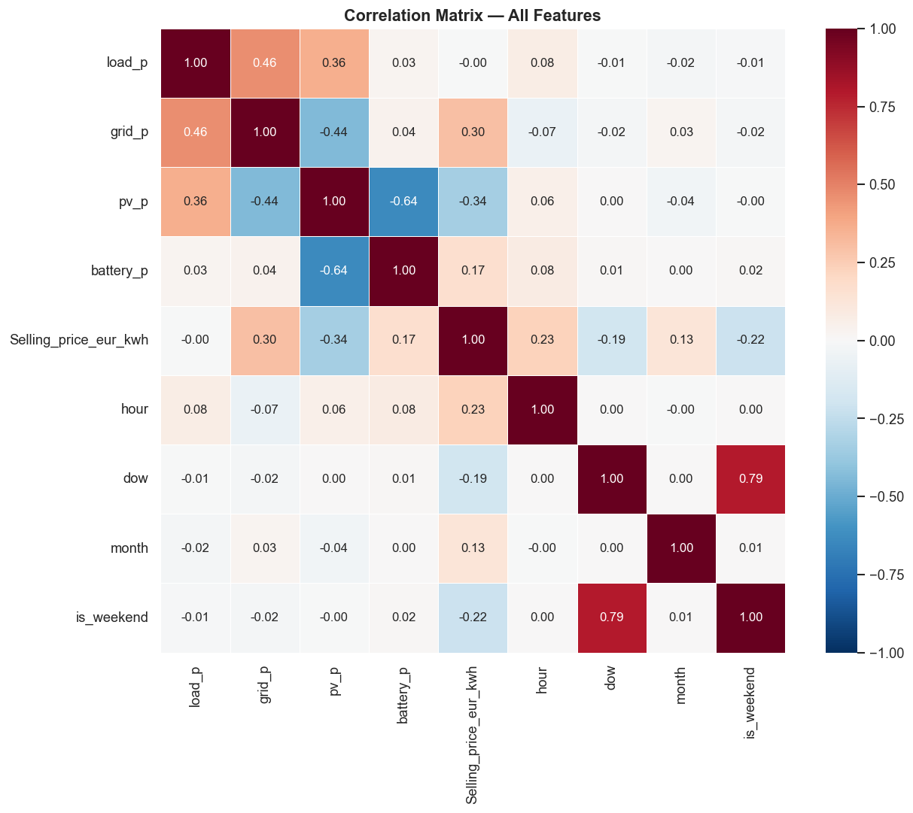
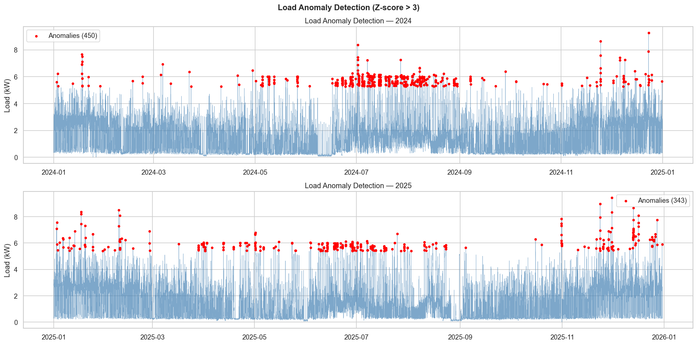
Red dots mark timesteps where load exceeds 3 standard deviations above the mean (~5.3+ kW). These are not sensor errors — they are real high-consumption events: electric vehicle charging, electric oven + other appliances running simultaneously, electric heating at full power, or other high-wattage equipment.
The anomalies appear scattered throughout the year with no strong seasonal clustering — they represent random high-demand events, not a systematic seasonal effect. About 1% of all timesteps are anomalous. The anomalies skew right (5.27–9.44 kW) — they are all high-consumption outliers, not zero-load anomalies.
These outliers will inflate RMSE disproportionately. A model that predicts the baseline well but misses these spikes will still score poorly on NRMSE. Options: (1) use quantile regression to estimate P90 load and add a buffer, (2) detect likely high-demand periods from context (e.g. pre-weekend, post-holiday), (3) accept the RMSE penalty and focus on getting the average right.
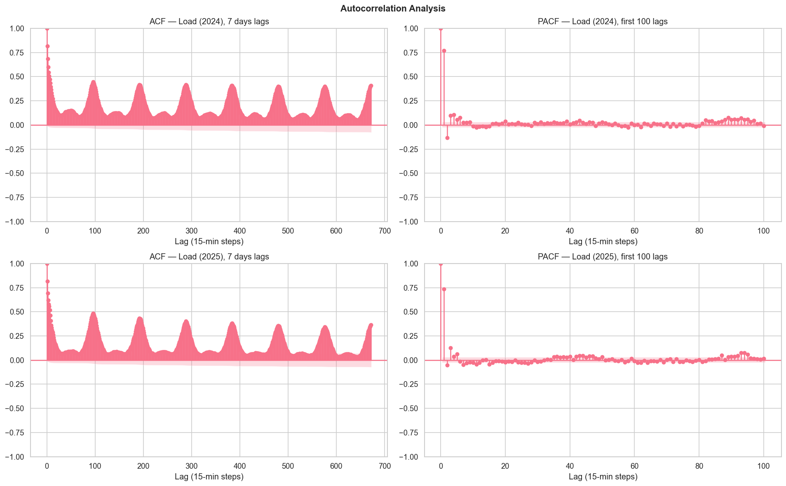
Both years pass the Augmented Dickey-Fuller test with p < 0.0001 — the load series is statistically stationary. This means the statistical properties (mean, variance) do not drift over time, which simplifies modelling considerably. We do not need differencing or detrending.
The ACF shows how correlated the current load is with values at increasing time lags:
The ACF decays slowly and never drops to zero within 7 days — indicating long-range temporal dependencies. This favours models like LSTM that can maintain memory over long sequences.
The PACF drops sharply after lag 1–3, then has isolated spikes at lags 96, 192, 672. This confirms that most of the autocorrelation is explained by the last few values plus the daily/weekly periodicities — which is exactly what our lag features encode.
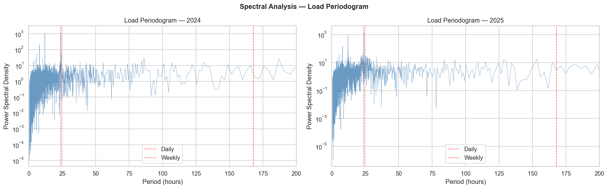
The periodogram decomposes the load signal into its constituent frequencies. A spike at a particular period means the load systematically repeats at that time scale.
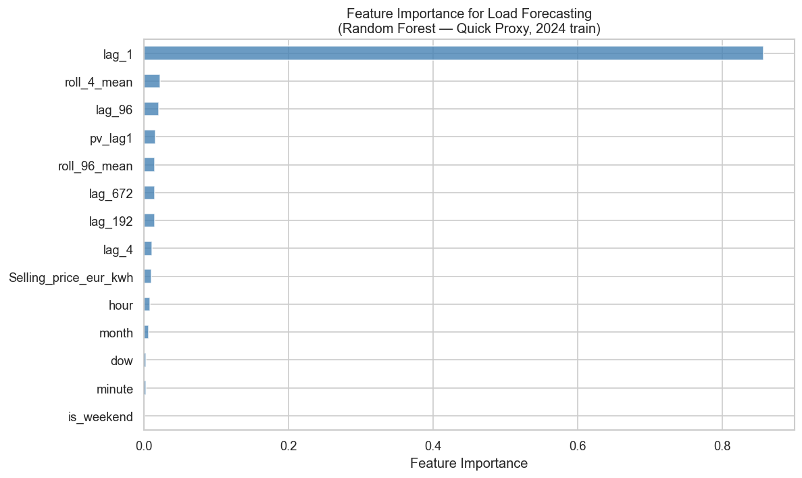
| Feature | Importance | Meaning |
|---|---|---|
| lag_1 | 85.7% | Load 15 minutes ago — dominant autoregressive signal |
| roll_4_mean | 2.2% | 1-hour rolling mean — smoothed recent trend |
| lag_96 | 2.0% | Load 24 hours ago — daily routine signal |
| pv_lag1 | 1.6% | PV 15 min ago — solar context signal |
| roll_96_mean | 1.5% | 24-hour rolling mean — daily baseline level |
| lag_672 | 1.5% | Load 1 week ago — weekly seasonality |
| lag_192 | 1.5% | Load 48 hours ago — 2-day memory |
| lag_4 | 1.1% | Load 1 hour ago |
| Selling_price | 1.0% | Current price — weak signal for load |
| hour | 0.85% | Hour of day — captured better by lags |
| month, dow, minute, is_weekend | <0.3% each | Weak marginal signals |
The previous 15-minute reading accounts for 85.7% of the Random Forest's predictive power. This is characteristic of any autoregressive time series — the most recent value is the best single predictor. However, this is somewhat misleading for our use case: we're building a multi-step ahead forecast (we need to predict load for the next several hours to make battery decisions). When predicting 4–24 steps ahead, lag_1 is no longer available, and lag_96 (yesterday), lag_672 (last week), and calendar features become much more important.